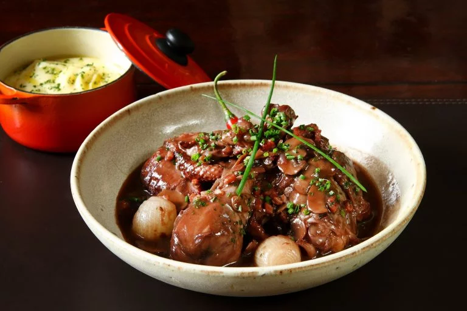

Coq au Vin

Description
This quintessential french food was popularized by Julia Child. The dish sees chicken braised with wine, mushrooms, salt pork or bacon, mushrooms, onions amnd sometimes even a drop of brandy.
Ingredients
- 2 tbsp sunflower oil
- 2 onions, finely sliced
- 1 tbsp tomato purée
- 3 garlic cloves, crushed
- 4 fresh thyme sprigs, plus extra leaves to garnish
- 200g button mushrooms
- 8 British free-range chicken thighs (bone-in), skin removed
- 400ml red wine
- 500ml fresh chicken stock
- 1 tbsp Worcestershire sauce
Steps
- Heat the sunflower oil in a large flameproof casserole. Add the onions and fry over a medium heat for 10 minutes (see tips). Add the tomato purée and cook for 30 seconds, stirring. Add the garlic, thyme, mushrooms and chicken and cook for 5-6 minutes (see tips).
- Pour in the wine, stock and Worcestershire sauce and simmer (uncovered) for 40 minutes or until the chicken is tender, stirring occasionally. Taste, then season with salt and black pepper.
- Garnish with thyme and parsley, then serve with mash and peas.